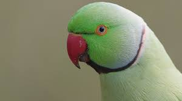

Parrot
Parrots are birds of all colors that usually originate from a warm habitat — think rainforests, grasslands, savannas, semi-arid regions, and even islands. A few species buck this trend and prefer colder climates, such as the Kea parrot, which inhabits the alpine regions of the South Island of New Zealand. Parrots are so much more than the stereotypical pirate “accessory” often portrayed in movies, books and other media. Most parrots are wild, but people began keeping some species as companions long ago. In fact, the San Diego Zoo website states that the first written account of a captive parrot dates from 400 B.C. These amazing avian companions now span the globe, living in the hearts and homes of people everywhere.